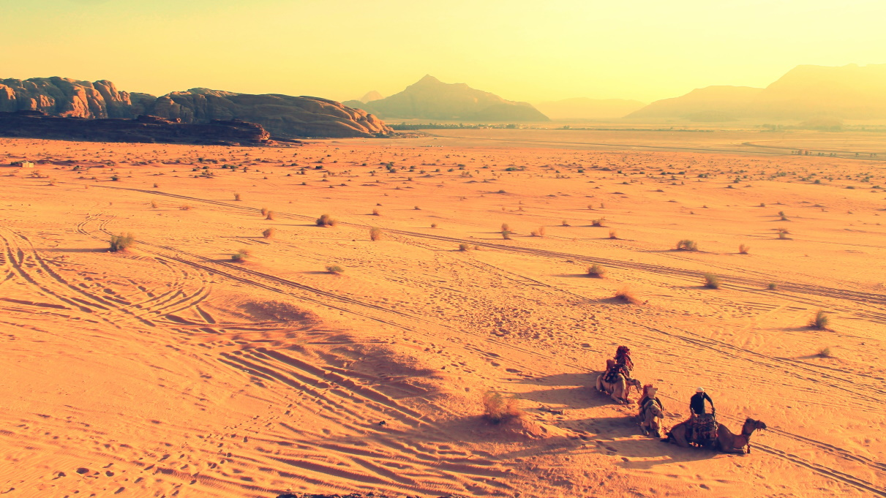

Viaja con Pepa
Inicio
Mis Viajes
Noticias
Contacto
Explora mis viajes
África

Foto de Oday Hazeem de Pexels
América
Foto de Quintin Gellar de Pexels
Asia
Foto de Janko Ferlic de Pexels
Europa
Foto de H. Emre de Pexels
Oceanía
Foto de The Geography Bible On YouTube de Pexels
 Foto de Quintin Gellar de Pexels
Foto de Quintin Gellar de Pexels
 Foto de Quintin Gellar de Pexels
Foto de Quintin Gellar de Pexels